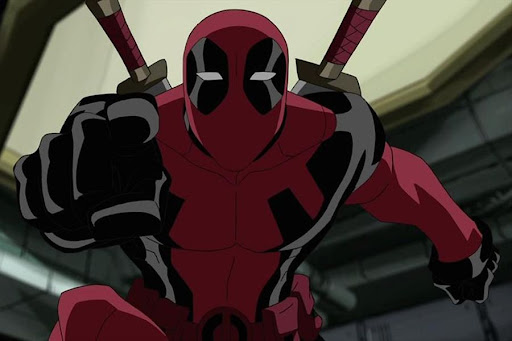

DEADPOOL
Wade Winston Wilson, más conocido como Deadpool, (y en España también como Masacre en los cómics de Forum y Panini) es un personaje ficticio, mercenario, supervillano67 y antihéroe, que aparece en los cómics publicados por Marvel Comics. Creado por el artista Rob Liefeld y el escritor Fabian Nicieza, Deadpool apareció por primera vez en New Mutants.
Como un mercenario mentalmente inestable y desfigurado, Deadpool apareció originalmente como un villano en el cómic New Mutants, y más tarde en ediciones de X-Force. Desde entonces, el personaje ha protagonizado varias series en curso, y comparte títulos con otros personajes, como Cable. Conocido como el "Mercenario Bocón" ("Merc with a Mouth" en inglés; "Mercenario Bocazas" en España), es famoso por su naturaleza comunicativa y por su tendencia a romper la cuarta pared, un recurso utilizado por los escritores para un efecto humorístico. Su mayor enemigo es Taskmaster.

Se describe a Deadpool como un factor de curación regenerativo, que no solo evita que sufra lesiones permanentes a través de la regeneración celular mejorada en todo su cuerpo, sino que también causa psicosis e inestabilidad mental, ya que sus neuronas también se ven afectadas por la regeneración acelerada. Se cree que si bien sus psicosis son una desventaja, también son uno de sus activos, ya que lo convierten en un oponente extremadamente impredecible. Taskmaster, que tiene memoria fotorreflexiva que le permite copiar las habilidades de combate de cualquier persona por observación, no pudo vencer a Deadpool debido a su estilo de lucha caótico e improvisado. Taskmaster también ha declarado que Deadpool es un experto en distraer a sus oponentes.